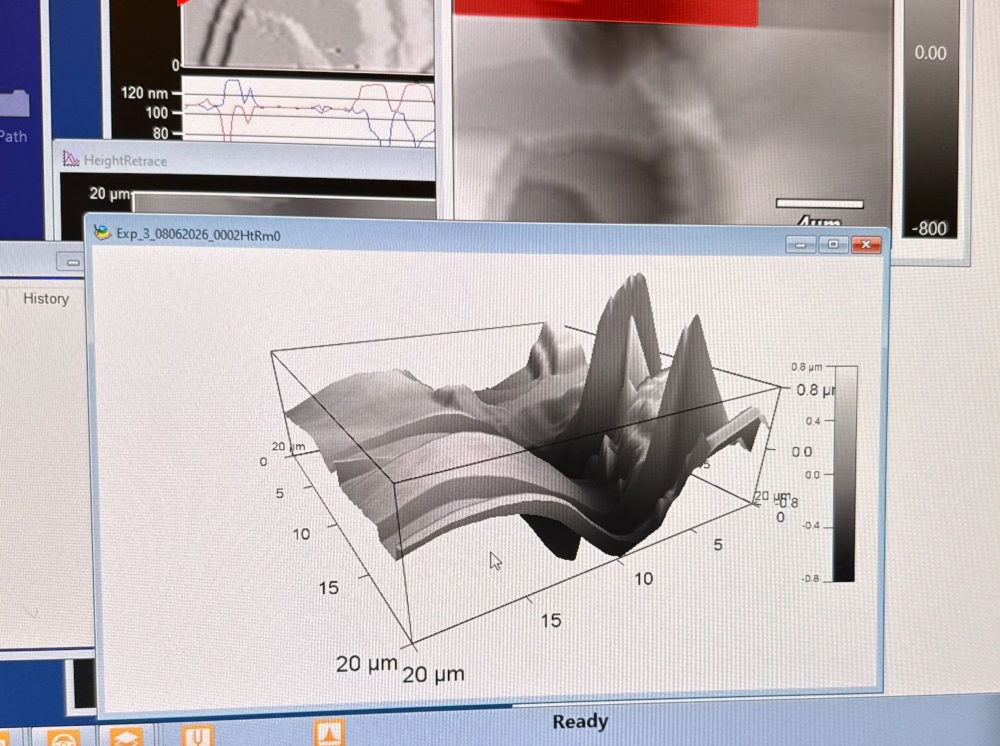

Background
Reactive ion etching (RIE) is one of the most process-sensitive steps in semiconductor fabrication. The number of parameters involved is incredibly large, and changing any even slightly effects etch rate, anisotropy, and surface roughness in ways that are expensive to characterize by brute-force experimentation. This research focuses on three variable parameters: radiofrequency (RF) bias power, vacuum chamber pressure, and gas flow rate. The goal of this work is to build a more efficient way of developing RIE recipes as opposed to tuning parameters one at a time.
Approach
We designed a Bayesian optimization framework to eliminate the need of running an exhaustive parameter sweep. This framework has two components: a Central Composite Design (CCD) lays out the initial experimental points across the parameter space (RF power, pressure, gas flow ratio), and a random-forest surrogate model uses the resulting measurements to predict etch outcomes at unsampled points. The optimizer then uses that surrogate to suggest which parameter combination to test next. As more experimental runs are conducted, the model eventually converges to some set of optimal parameter values.
When building the model, we leveraged etch data from academic literature to make the Bayesian model "physics-informed." This means the model understood and could apply relationships between RF power, ion bombardment energy, and etch anisotropy to determine how to set the parameter bounds. This lets the model make educated suggestions rather than letting the optimizer explore the parameter space blindly.
Measurement & Metrology
Etch outcomes were characterized using atomic force microscopy (AFM) to measure etch depth and surface roughness, feeding results back into the optimization loop after each run.
Interim Results
Initial AFM scans of etched samples were less than ideal, as seen in the 3D scan below. Smooth, uniform surfaces were not achieved after etching, and a gradient profile between the etched vs. non-etched region was observed as opposed to a clean step etch.
We believed the issue stemmed from AFM setup before identifying our substrate prep process to be the root cause. Areas of potential surface contamination would account for the uneven surfaces and gradient etch. This has been addressed, and newly etched samples will be observed once our new AFM probes arrive.

Tools & Techniques
- Fabrication: Spin coater, ABM photolithography mask aligner, Plasmalab System 100 ICP, SF₆/Ar chemistry
- Design of experiments: Central Composite Design
- Modeling: Random forest, Bayesian optimization
- Metrology: Atomic force microscopy